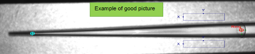
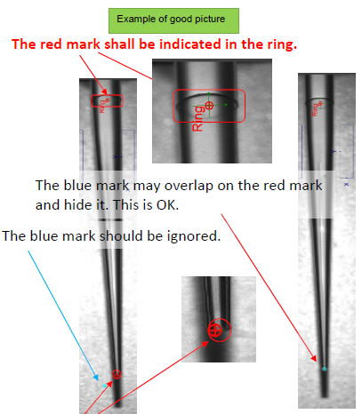

Calibrating the Precision Sample Pipettor Camera
This topic includes information about calibrating the precision sample pipettor camera.
Note: See
Calibrating Cameras for more information about calibrating all cameras.
Note: In software version 1.17.2 and later, the Precision Sample Pipettor Check of Tip Check camera calibration replaces the former Precision Pipettor Tip Discard camera calibration.
Note: During a procedure, if you use the In-Sight Explorer application to make an adjustment, after you make an adjustment, be sure to click an empty cell so that the spreadsheet formula calculations update.
Prepare the Instrument for Camera Calibrations
- Be sure there is enough substrate, wash buffer, and reaction vessels in the instrument to prime the instrument and to complete the desired calibrations.
- Initialize the instrument. See Initializing the Instrument for more information.
- Prime the instrument. See
Priming the Instrument for more information.
Note: Initialization and priming may take several minutes.
- In the Console App select the SYSTEM RUNNING button and go to to enter the instrument into a YELLOW (Paused) status.
Calibrating the Precision Sample Pipettor LED/Exposure Setting
- Be sure the instrument is in a YELLOW (Paused) status.
- Remove tip from mandrel (if present).
- In the Console App go to to open the Intrusive Diagnostics page.
- Press the Windows key and go to to open the In-Sight Explorer application.
- In the In-Sight Explorer application go to to open the In-Sight Network pane.
- In the In-Sight Network pane, right-click the precision sample pipettor camera and select Show Spreadsheet View.
- In the Console App on the Intrusive Diagnostics page select Start Session to enter the instrument into a BLUE (Maintenance) status.
- Select Camera Calibration to open the Camera Calibration page.
- In the Camera Function column select the Precision Sample Pippettor LED/Exposure Setting checkbox.
- Clear any other check boxes.
- Select Start Camera Calibration.
- Follow the steps in the Status pane.
- If the camera setting passes calibration, the Last Calibration column will display Today and the Result column will display Pass, and the Status pane will display the notification Operation completed: Camera Calibration.
- If the camera setting fails calibration, follow the steps and suggestions in the Status pane and rerun the calibration.
- Go to the Intrusive Diagnostics page and select
End Session.
Note: Do not end the session if additional calibrations are required.
Calibrating the Precision Sample Pipettor Tip Ring/Tip End Setting
- Be sure the instrument is in a YELLOW (Paused) status.
- In the Console App go to to open the Intrusive Diagnostics page.
- Press the Windows key and go to to open the In-Sight Explorer application.
- In the In-Sight Explorer application go to to open the In-Sight Network pane.
- In the In-Sight Network pane, right-click the precision sample pipettor camera and select Show Spreadsheet View.
- In the Console App on the Intrusive Diagnostics page select Start Session to enter the instrument into a BLUE (Maintenance) status.
- Select Camera Calibration to open the Camera Calibration page.
- In the Camera Function column select the Precision Sample Pipettor Tip Ring/Tip End checkbox.
- Clear any other check boxes.
- Select Start Camera Calibration.
- Follow the steps in the Status pane.
- Select
Resume Camera Calibration to begin the calibration.
Note: The Status window may prompt for SOP C38843.
- Return to In-Sight Explorer.
- Select the
Overlay icon on In-Sight Explorer to clearly see picture and verify the locations of the Ring and Tip End match the examples in the pictures below:


- If the locations are correct, return to the Console App and select
Resume Camera Calibration to complete the calibration.
- If the camera setting passes calibration, the Last Calibration column will display Today and the Result column will display Pass, and the Status pane will display the notification Operation completed: Camera Calibration.
Calibrating the Precision Sample Pipettor Reflector Setting
- Be sure the instrument is in a YELLOW (Paused) status.
- In the Console App go to to open the Intrusive Diagnostics page.
- Press the Windows key and go to to open the In-Sight Explorer application.
- In the In-Sight Explorer application go to to open the In-Sight Network pane.
- In the In-Sight Network pane, right-click the precision sample pipettor camera and select Show Spreadsheet View.
- In the Console App on the Intrusive Diagnostics page select Start Session to enter the instrument into a BLUE (Maintenance) status.
- Select Camera Calibration to open the Camera Calibration page.
- In the Camera Function column select the Precision Sample Pipettor Reflector checkbox.
- Clear all other check boxes.
- Select
Start Camera Calibration.
- If the camera setting passes calibration, the Last Calibration column will display Today and the Result column will display Pass, and the Status pane will display the notification Operation completed: Camera Calibration.
Calibrating the Precision Sample Pipettor Check of Tip Check Setting
- Be sure the instrument is in a YELLOW (Paused) status.
- In the Console App go to to open the Intrusive Diagnostics page.
- Press the Windows key and go to to open the In-Sight Explorer application.
- In the In-Sight Explorer application go to to open the In-Sight Network pane.
- In the In-Sight Network pane, right-click the precision sample pipettor camera and select Show Spreadsheet View.
- In the Console App on the Intrusive Diagnostics page select Start Session to enter the instrument into a BLUE (Maintenance) status.
- Select Camera Calibration to open the Camera Calibration page.
- In the Camera function column select the Precision Sample Pipettor Check of Tip Check checkbox.
- Clear all other check boxes.
- Select Start Camera Calibration.
- Follow the steps in the Status pane.
- If the camera setting passes calibration, the Last Calibration column will display Today and the Result column will display Pass, and the Status pane will display the notification Operation completed: Camera Calibration.
Calibrating the Precision Sample Pipettor Volume Check Setting
- Be sure the instrument is in a YELLOW (Paused) status.
- In the Console App go to to open the Intrusive Diagnostics page.
- Press the Windows key and go to to open the In-Sight Explorer application.
- In the In-Sight Explorer application go to to open the In-Sight Network pane.
- In the In-Sight Network pane, right-click the precision sample pipettor camera and select Show Spreadsheet View.
- In the Console App on the Intrusive Diagnostics page select Start Session to enter the instrument into a BLUE (Maintenance) status.
- Select Camera Calibration to open the Camera Calibration page.
- In the Camera Function column select the Precision Sample Pipettor Volume Check checkbox.
- Clear all other check boxes.
- In In-sight Explorer, on the menu bar select Record to record BMP files.
- In the Console App on the Camera Calibration page select
Start Camera Calibration.
- If the camera setting passes calibration, the Last Calibration column will display Today and the Result column will display Pass, and the Status pane will display the notification Operation completed: Camera Calibration.
- In In-Sight Explorer clear the Record button to stop recording.